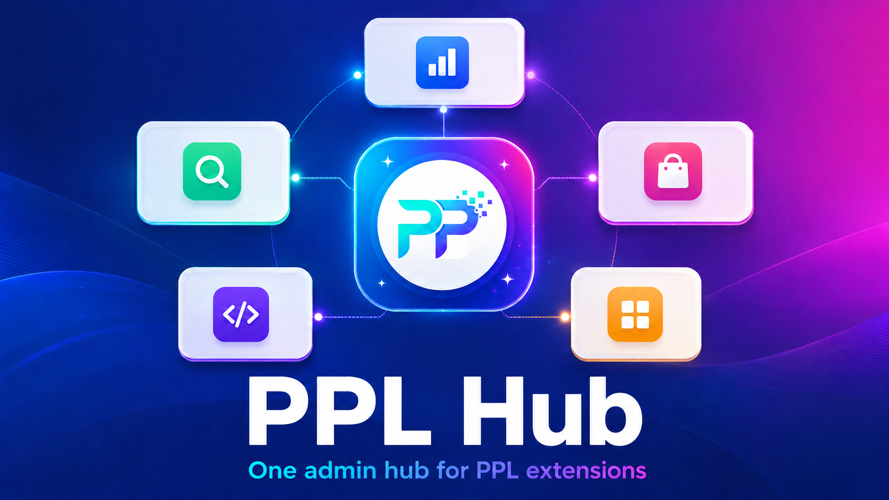

Consistent navigation
PPL extensions appear under one admin menu root instead of scattering through unrelated menus.
PPL Hub provides the shared Magento admin menu root for PPL modules, keeping search, reports, developer tools, privacy and action widgets in one organized admin area.

PPL extensions appear under one admin menu root instead of scattering through unrelated menus.
Feature modules can depend on Hub without pulling in storefront behavior or report logic.